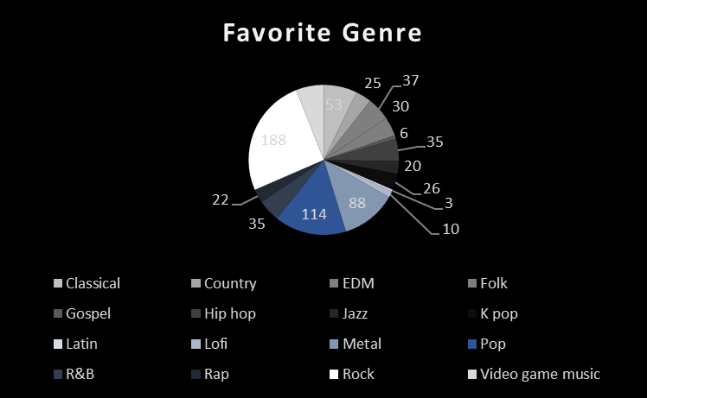
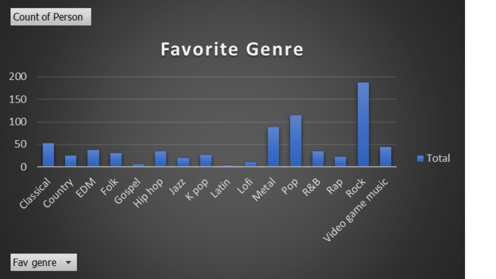
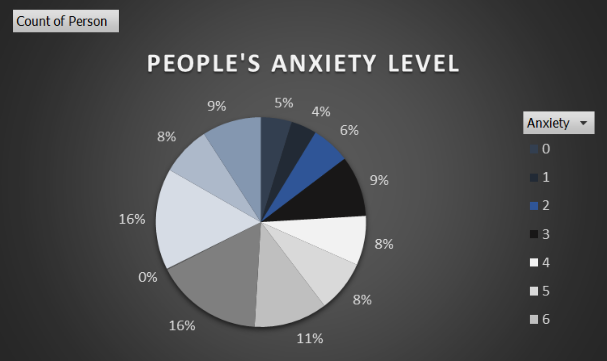
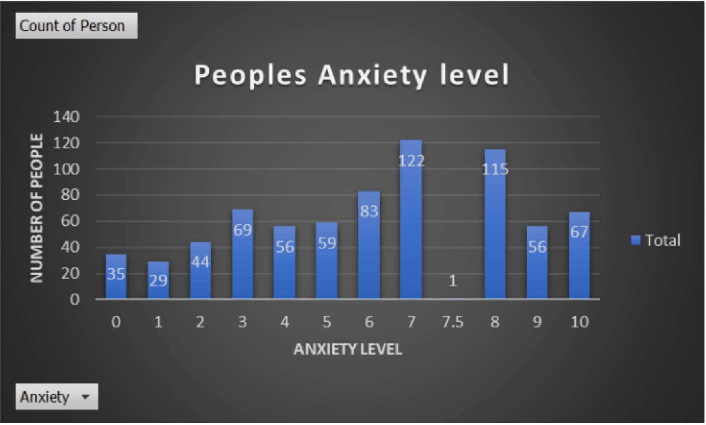

Shown above is data that we gathered of people's favorite genres.
 In these graphs, a pie chart and a bar graph respectively, the genre with the biggest piece of the pie is the Rock genre, with 188 responses, meaning that a huge number of the respondents listen to rock music. Meanwhile, the genre with the least responses is Latin music, with only 3 responses, meaning that only a very small percentage of the respondents listen to Latin music.
Showb above is the data that we gathered of the respondents' anxiety levels.
 In these graphs, a pie chart and a bar graph respectively, the anxiety level that had the most answers was level 7, with 122 respondents, which can mean that a lot of the survey respondents are very anxious. The anxiety level with the least answers was level 7.5 , with only 1 respondent, which can mean that only this particular respondent is slightly more anxious than the people with anxiety level 7.